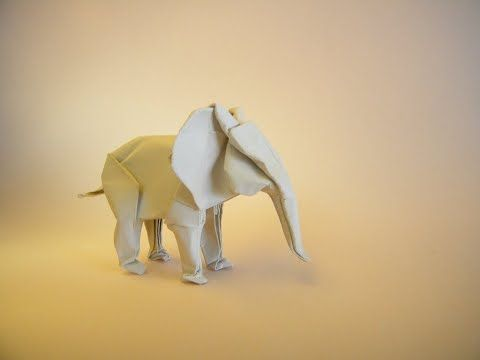
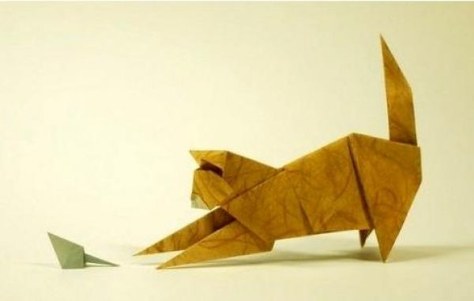
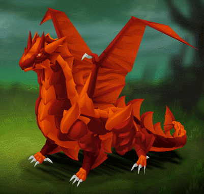

What is origami?
Origami is the art of paper folding, which is often associated with Japanese culture. In modern usage, the word "origami" is
used as an inclusive term for all folding practices, regardless of their culture of origin. The goal is to transform a
flat square sheet of paper into a finished sculpture through folding and sculpting techniques. Modern origami practitioners
generally discourage the use of cuts, glue, or markings on the paper. Origami folders often use the Japanese word kirigami
to refer to designs which use cuts.
Interesting facts about origami.
- In Japan, origami has inspired a lot of art, fashion, food, and even architecture! If you visit, try to find all the
buildings based on origami style.
- There are more than a dozen National Origami Associations throughout the world.
- Akira Yoshizawa is considered the Grand Master of modern Origami. He created over 50,000 origami models, invented
wet-folding, and developed a method of diagramming origami instructions.
- The Guinness Book of World Records has dozens of entries for origami from most folds, to smallest and biggest and more!
Can you guess the fastest time for folding 100 cranes?
- The fastest time to make 100 origami cranes is 40 minutes 35 seconds, achieved by Yoneyama Yuichi (Japan) in Nagoya, Japan,
on 30 November 2010. That’s an average of 24.35 seconds for each crane!
- Initially, the art of paper folding was restricted only to ceremonial occasions because paper was scarce and expensive.
- Origami is derived from two Japanese words: Ori (folded) and Kami (paper). Before that, the art was called “orikata” (folded shapes).
- An ancient Japanese legend says if you fold one thousand cranes you will be granted a wish. Feeling lucky?
- No scissors allowed! Traditional origami uses a piece of paper in the shape of a square. Up to the challenge?
Origami designs



Click the image to learn the steps
Follow us
About us